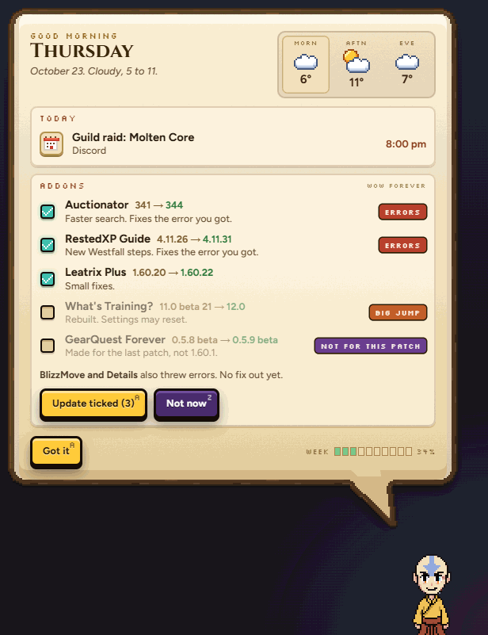
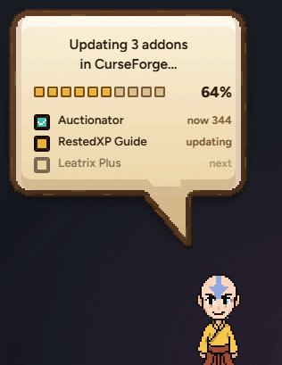
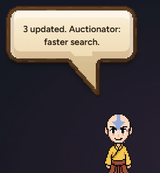
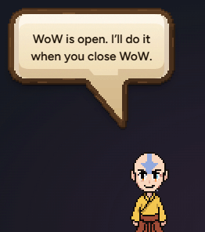
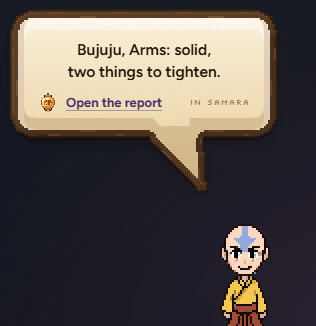
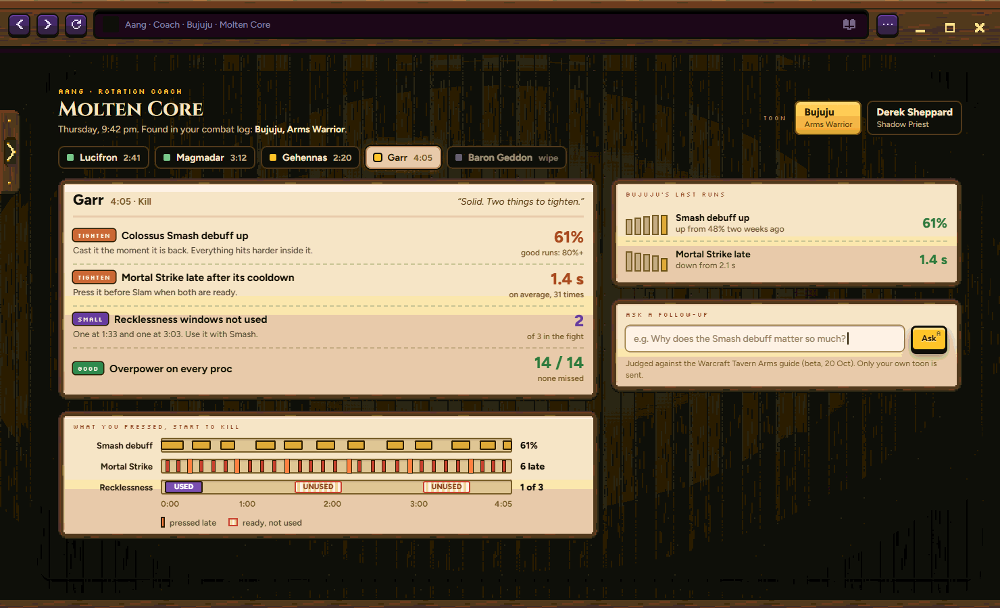
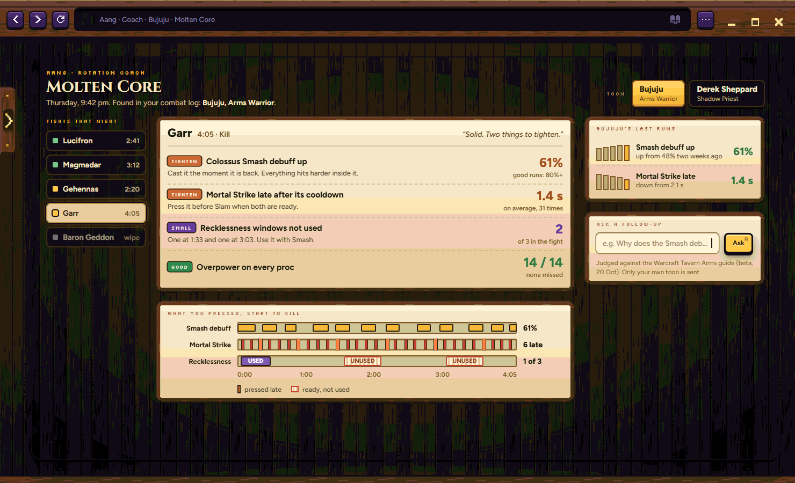
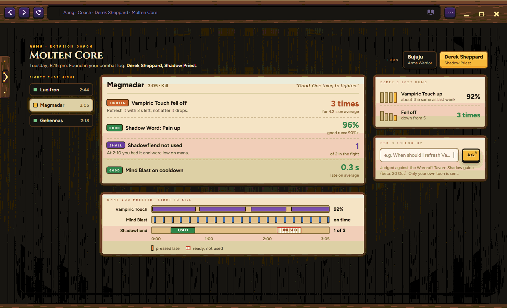

AALL TICKED
22 Oct · real bubble and real Samara frame · your addon names, example updates (all 17 are up to date today) · example fights (no combat log yet)
Two things: your addon updates in the morning brief, and a rotation coach you ask after a fight.
WHAT TO PICK Row 1: A or B · Row 2: A or B · or tell me what to change
A new Addons slip under Today. Each row: tick, name, old → new, one short line, and a warning tag when there is one. Aang only does this with WoW closed.
A: every update ticked. B: risky ones start unticked (BIG JUMP, NOT FOR THIS PATCH). ERRORS stay ticked: the update is often the fix.

Aang drives the CurseForge app (minimized), checks each one really changed, then says one line.



Only when you ask. Aang finds the toon and spec in the combat log by himself, answers in one line, and the line opens the full report in Samara.

Same report both ways: 3 to 5 findings with numbers, what you pressed over the fight, your last runs, and a follow-up box. Toon switcher top right.


Click Derek Sheppard: his own fights, spec and history. Nothing is shared between toons.
